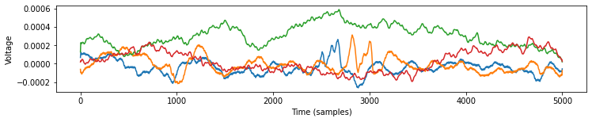

[1]:
import os
from tqdm.notebook import tqdm
import matplotlib.pyplot as plt
import openneuro
from ndspflow.workflows.workflow import WorkFlow
from neurodsp.filt import filter_signal
from neurodsp.spectral import compute_spectrum
from fooof import FOOOF, FOOOFGroup
from bycycle import Bycycle
BIDS WorkFlow¶
Below, we fetch a BIDS dataset using the openneuro cli. Then define and execute the following workflow:
Load the BIDS directory using MNE BIDS
Apply custom functions to select channels and epoch the signal
Low-pass filter with neurodsp
Fit FOOOF
Fit Bycycle
[2]:
%%capture
dataset = 'ds003844'
include = ['sub-RESP0059/ses-SITUATION1A', 'sub-RESP0280/ses-SITUATION1A']
# Create BIDs folder
bids_path = f'{os.getcwd()}/bids'
if not os.path.isdir(bids_path):
os.makedirs(bids_path)
openneuro.download(dataset=dataset, target_dir=bids_path, include=include)
[3]:
def select_channels(y_array, channels):
"""Select sub-set of channels."""
inds = [ind for ind, ch in enumerate(channels)
if ch in channels]
return y_array[inds, :]
def epoch(y_array, n_epochs, epoch_len):
"""Epoch function."""
y_array = y_array[:, :int(n_epochs) * epoch_len]
y_array = y_array.reshape(-1, epoch_len)
return y_array
[4]:
wf = WorkFlow(bids_path=bids_path, session='SITUATION1A', task='acute')
wf.read_bids(subject='sub-RESP0059', allow_ragged=True)
# Custom transforms
wf.transform(select_channels, ['Gr16', 'Gr17'])
wf.transform(epoch, 2, 5000)
wf.transform(filter_signal, 'self.fs', 'lowpass', 200, remove_edges=False)
wf.fork(0)
wf.transform(compute_spectrum, 'self.fs')
wf.fit(FOOOF(verbose=False, max_n_peaks=5), (1, 100), axis=-1)
wf.fork(0)
wf.fit(Bycycle(), 'self.fs', (50, 100), axis=-1)
wf.run(n_jobs=1, progress=tqdm)
[5]:
wf.results
[5]:
[[[<fooof.objs.fit.FOOOF at 0x7fc9633a5a60>,
<fooof.objs.fit.FOOOF at 0x7fc9633a5310>,
<fooof.objs.fit.FOOOF at 0x7fc9633885e0>,
<fooof.objs.fit.FOOOF at 0x7fc963388340>],
[<bycycle.objs.fit.Bycycle at 0x7fc963388a60>,
<bycycle.objs.fit.Bycycle at 0x7fc9633920d0>,
<bycycle.objs.fit.Bycycle at 0x7fc963392dc0>,
<bycycle.objs.fit.Bycycle at 0x7fc960247160>]],
[[<fooof.objs.fit.FOOOF at 0x7fc9633a5eb0>,
<fooof.objs.fit.FOOOF at 0x7fc96232ad30>,
<fooof.objs.fit.FOOOF at 0x7fc963388d00>,
<fooof.objs.fit.FOOOF at 0x7fc963392a00>],
[<bycycle.objs.fit.Bycycle at 0x7fc960247970>,
<bycycle.objs.fit.Bycycle at 0x7fc960247850>,
<bycycle.objs.fit.Bycycle at 0x7fc960247cd0>,
<bycycle.objs.fit.Bycycle at 0x7fc960247f10>]]]
Inspecting Workflows¶
Workflows may be inspected using the .merge method. This executes each workflow and stores the result into the y_array attribute. Below, we plot the signals resulting from the preprocessing in the workflow.
[6]:
wf = WorkFlow(bids_path=bids_path, session='SITUATION1A', task='acute')
wf.read_bids(subject='sub-RESP0059', allow_ragged=True)
# Custom transforms
wf.transform(select_channels, ['Gr16', 'Gr17'])
wf.transform(epoch, 2, 5000)
wf.transform(filter_signal, 'self.fs', 'lowpass', 200, remove_edges=False)
wf.merge()
[7]:
# Plot example channels
plt.figure(figsize=(12, 2))
for subj in wf.y_array:
for ch in subj[2:]:
plt.plot(ch)
plt.ylabel('Voltage')
plt.xlabel('Time (samples)')
[7]:
Text(0.5, 0, 'Time (samples)')
